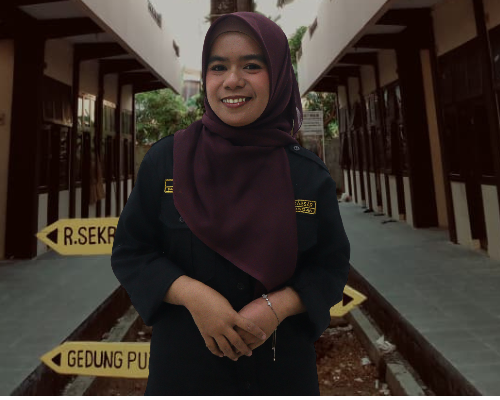
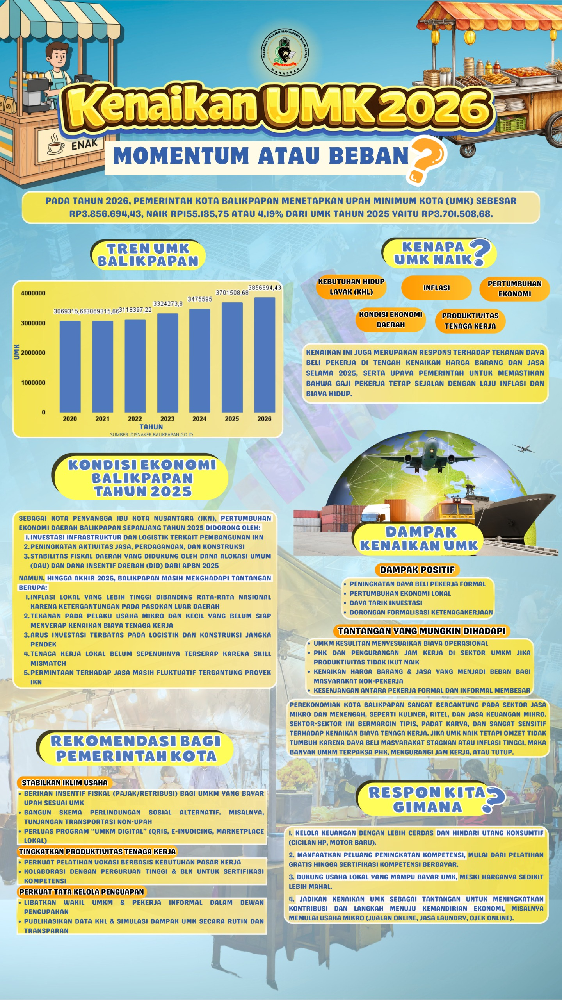
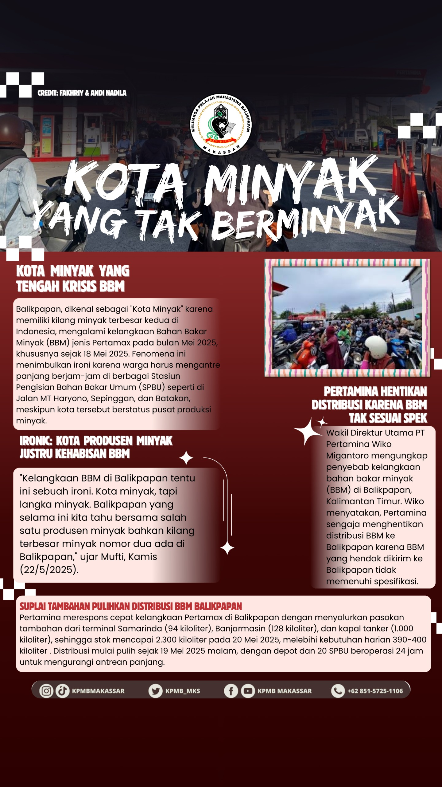
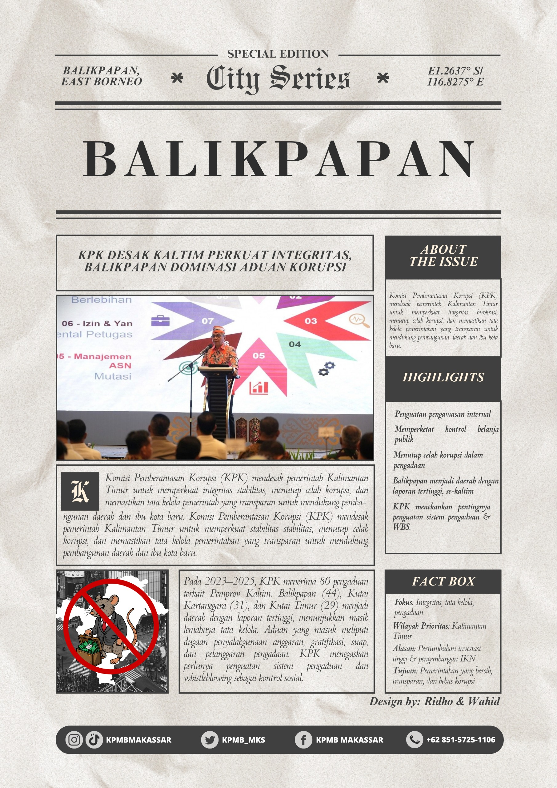

KPMB Makassar
Keluarga Pelajar Mahasiswa Balikpapan
Keluarga Pelajar Mahasiswa Balikpapan
Wadah kebersamaan mahasiswa Balikpapan di Makassar
Mahasiswa asal Balikpapan yang kuliah di Makassar.
Membangun kebersamaan mahasiswa daerah.
Kegiatan dan event terbaru KPMB Makassar
Kegiatan sosial donor darah bersama PMI dan warga KPMB Makassar.
Malam keakraban dan penguatan solidaritas antar anggota KPMB.
Seminar pengembangan mahasiswa dan leadership bersama alumni.
Pesan dan kesan alumni untuk KPMB Makassar

“KPMB bukan hanya tempat berkumpul, tapi rumah kedua selama merantau di Makassar.”

“Banyak pengalaman organisasi, relasi, dan pembelajaran hidup yang saya dapatkan di KPMB.”

“Semoga KPMB terus berkembang dan menjadi tempat lahirnya mahasiswa hebat dari Balikpapan.”
Pertanyaan yang sering ditanyakan
KPMB Makassar adalah organisasi mahasiswa asal Balikpapan yang sedang menempuh pendidikan di Makassar.
Kamu bisa menghubungi pengurus KPMB melalui Instagram, WhatsApp, atau datang langsung ke sekretariat.
KPMB memiliki kegiatan sosial, pendidikan, pengembangan SDM, olahraga, seminar, hingga pengabdian masyarakat.
Alumni
Anggota Aktif
Kegiatan
Kampus
KPMB Makassar adalah organisasi mahasiswa asal Balikpapan yang menempuh pendidikan di Makassar. Organisasi ini menjadi wadah kebersamaan, pengembangan diri, serta kontribusi sosial bagi anggota.
Klik untuk melihat nilai-nilai yang menjadi dasar organisasi.
Klik untuk membaca buku sejarah.
Klik untuk melihat data warga dan alumni
Klik untuk melihat visi dan misi organisasi.

Dhiyani Fadilatuh Iffah

Adharian Nur Al Janni

Marshela

Reza Anjelina Cahya

Hartika Julianty Nursuhada

Amanda Nur Fadilah

Daniel Putra Natama Lumban Gaol

Achmad Nurwahid

Samuel Putra Natama Lumban Gaol
Samuel Putra Natama Lumban Gaol

Afkhar Fahry Wardana

Dewi Hardiani

Ermi

Andi Miftahul Jannah

Koordinator: Hartika Julianty

Koordinator: Akhmad Nurwahid

Koordinator: Dewi Hardiani
Program kerja setiap bidang KPMB Makassar
Sebagai bentuk apresiasi terhadap partisipasi serta kontribusi Warga KPMB Makassar.
Meningkatkan semangat untuk berpartisipasi dalam kegiatan KPMB Makassar.
Berakhirnya masa kepengurusan KPMB Makassar periode 2025–2026.
Mengakhiri masa jabatan pengurus serta menjalankan MUSWAM sesuai AD/ART organisasi.
Sebagai bentuk selebrasi terbentuknya KPMB Makassar.
Memperingati hari terbentuknya organisasi KPMB Makassar.
Perlunya evaluasi dan proyeksi kinerja kepengurusan secara berkala.
Mengevaluasi capaian program kerja dan menyusun langkah kepengurusan selanjutnya.
Buku sejarah merupakan sumber penting dalam memahami perjalanan KPMB Makassar.
Mengenalkan sejarah KPMB Makassar dari awal hingga perkembangan terbaru.
Adanya rekomendasi MUSWAM XVIII untuk membuat majalah KPMB Makassar.
Sebagai sarana informasi, dokumentasi, dan publikasi kegiatan organisasi.
Pentingnya merayakan hari diresmikannya asrama sebagai bentuk rasa syukur.
Memperingati hari diresmikannya Asrama KPMB Makassar.
Sebagai wadah bagi warga asrama untuk memanfaatkan lahan penghijauan.
Menciptakan lingkungan yang asri dan nyaman di Asrama KPMB Makassar.
Kegiatan yang mengacu pada Pedoman Kerja Organisasi sebagai proses kaderisasi.
Mengenalkan organisasi, membentuk kader baru, jiwa kepemimpinan, dan loyalitas.
Sebagai tindak lanjut proses pengkaderan untuk menghasilkan trainer yang kompeten.
Meningkatkan kualitas SDM dan menghasilkan trainer baru yang kompeten.
Wadah informasi terbaru mengenai isu-isu yang berkembang di Kota Balikpapan.
Menjadi sarana penyaluran bakat dan media komunikasi informasi.
Memberikan ruang diskusi, kajian, dan pengembangan diri bagi anggota.
Meningkatkan kapasitas anggota serta menumbuhkan nilai kekeluargaan.
Proses lanjutan dalam mengenal organisasi dan meningkatkan kualitas anggota.
Meningkatkan kualitas SDM, rasa percaya diri, dan kemampuan anggota.
Membangun kepedulian warga KPMB Makassar terhadap lingkungan dan masyarakat.
Meningkatkan rasa kepedulian sosial kepada sesama.
Menelusuri dan memahami sejarah Makassar dari aspek sosial, budaya, dan perjuangan masyarakat.
Membagikan ilmu pengetahuan tentang sejarah Kota Makassar kepada warga.
Perlunya memperkenalkan KPMB Makassar kepada siswa SMA/SMK di Balikpapan.
Mempromosikan KPMB Makassar dan memperkenalkan dunia perkuliahan.
Memperkenalkan KPMB Makassar melalui media sosial dan digitalisasi kegiatan.
Mempublikasikan informasi tentang Kota Balikpapan dan KPMB Makassar.
Pentingnya wadah informasi dan database yang terintegrasi melalui website.
Sebagai sarana komunikasi dan informasi internal maupun eksternal organisasi.


